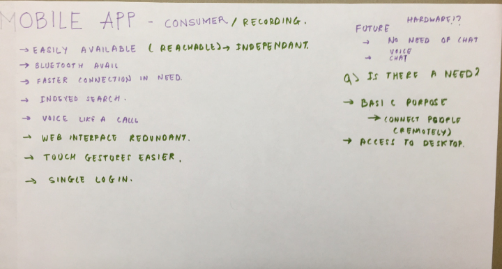
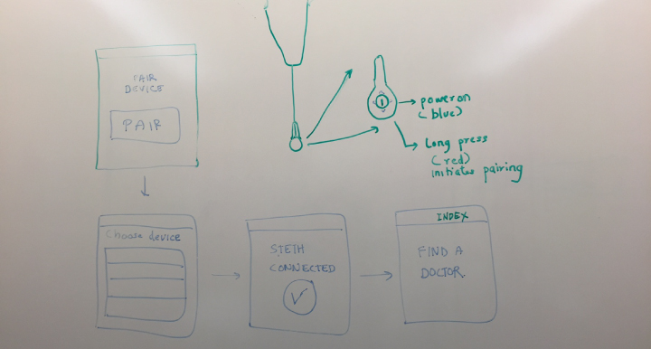
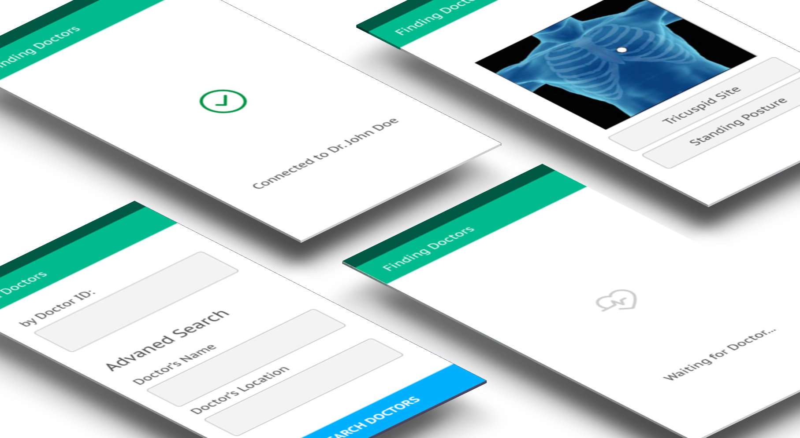

We started the group brainstorming by thinking out loud about the possible applications of this solution. Since it was to be used for remote diagnosis, a mobile application would be highly useful due to ubiquity of broadband connectivity. Also, this allowed us to implement communication between the doctor and patient over a voice channel. Additionally, an on-the-go application with an easy touch inteface significantly enhanced the user-experience.
We moved on to the Stethoscope, which currently had a small screen and 4 buttons which were not clear about their functions. We simplified the stethoscope to just have one power button, which could be long pressed to start the pairing process with the mobile device. There was visual feedback for these actions on the stethoscope with the help of a led light and also on the mobile device have the same color consistency as the stethoscope.
Next, we started working on the mobile user interface. We created an information architecture of the application, and how the flow of information will take place in the application.
First, we analysed the shortcomings of the current system and summarized them:
Next, we developed improvement areas and sketched them:
Due to the lack of time we only had time to make the paper mockups of the application, but we tried making a few visual high-fidelity mockups to give people a look and feel of the colors involved.
